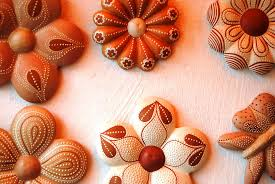
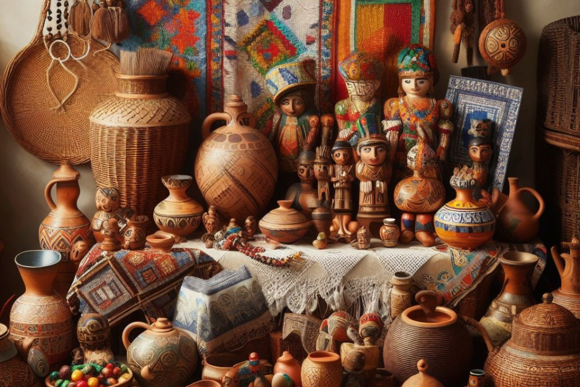
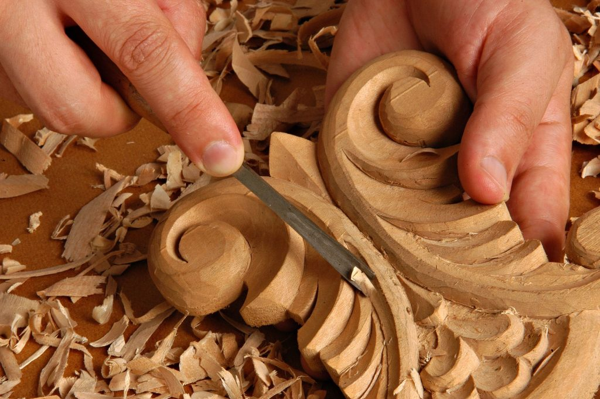
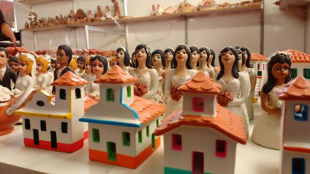

Arte no Vale do Jequitinhonha – Patrimônio imaterial de Minas Gerais

55 municípios de Minas Gerais fazem parte do Vale do Jequitinhonha, ou seja, representa 14% do estado.
Essa região rica em arte e cultura se tornou patrimônio imaterial de MG em 2018.
Artesanato em Barro no Vale do Jequitinhonha

O Vale do Jequitinhonha é famoso pela cultura do artesanato em barro sendo, certamente, um dos mais legítimos e representativos do Brasil.
Apesar de ser uma região escassa, a tradição do artesanto em barro atravessou gerações contando histórias e enriquecendo a cultura local.
A produção de peças em barro vem de uma cultura ancestral, e é uma herança deixada pelos índios. Esta atividade existe há mais de 3 mil anos antes de cristo.
O processo de produção artesanal no Vale do Jequitinhonha

Todo o processo de produção das peças é manual. Os artesãos têm o domínio de todas as etapas, desde a extração do barro,
a fabricação dos pigmentos, bem como a construção de fornos para queima.
Além da tradição e das técnicas ensinadas para as gerações mais jovens, os artesãos do Jequitinhonha desenvolveram diversas expressões artísticas.
Assim, produzem peças utilitárias, esculturas decorativas com cenas do cotidiano, vivência sentimentos e crenças.
As viúvas dos maridos vivos

A transformação do barro em artesanto surgiu, principalmente, por necessidade de mulheres e crianças.
Quando os pais de família iam para grandes centros urbanos buscar por trabalho, deixavam para trás suas esposas e filhos sozinhos por meses ou anos. Eventualmente, essas mulheres ficaram conhecidas como "viúvas de maridos vivos".
Assim, dessa realidade surgiram as famosas bonecas de cerâmica, que retratam a história de vida das mulheres do Jequitinhonha.
Apesar de cada boneca ser única, algumas temáticas estão sempre presentes. Figuras de mulheres grávidas, com bebês de colo, noivas, sempre com olhar vago. Logo, essas produções em barro se tornaram o principal sustento de muitas famílias.
Finalmente, em 2018, o Vale do Jequitinhonha foi reconhecido como patrimônio imaterial de Minas Gerais. Hoje a região conta com o Conselho das Artesãs do Vale do Jequitinhonha (CAVJ). A associação sem fins lucrativos representa, estuda e divulga a cultura da região.